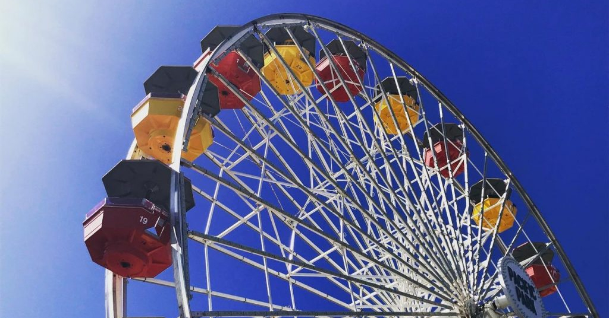

Come to the World's Columbian Expedition for my new ride, the Ferris wheel! I promise you that it will be a relaxing spin with many exciting views.

Ferris Wheel Debuts at World's Columbian Expedition!
A new attraction, the Ferris Wheel, is set to debut at the World's Columbian Expedition in Chicago. Creator George Washington Gale Ferris Jr. promises that it is fun and totally safe.